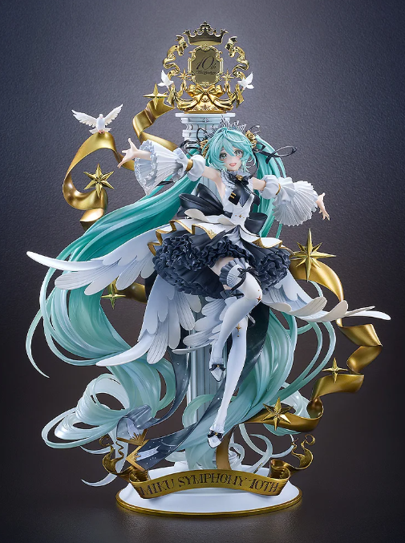

From "Character Vocal Series 01: Hatsune Miku" comes a 1/7 scale figure based on the Hatsune Miku Symphony 2025 Yokohama & Kobe Concert key visual illustration. The majestic artwork by illustrator Rella has been faithfully recreated in figure form with meticulous attention to detail. Miku's hair boasts an unprecedented level of volume, with refined strands flowing outward to create a sense of fullness while still achieving an airy lightness. The gold accents have been brought to life through a skillful combination of metallic and pearlescent finishes, faithfully capturing both the elegance and sense of grandeur of the original illustration. Be sure to add this special rendition of Hatsune Miku with a radiant smile to your collection.
Price: € 309,99